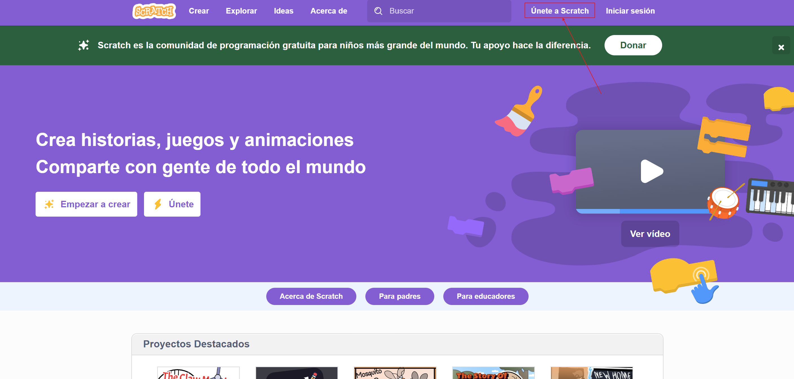
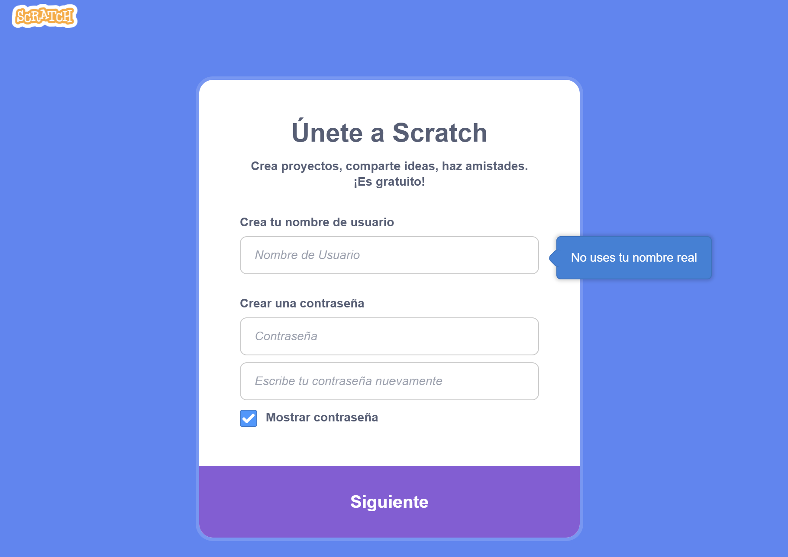
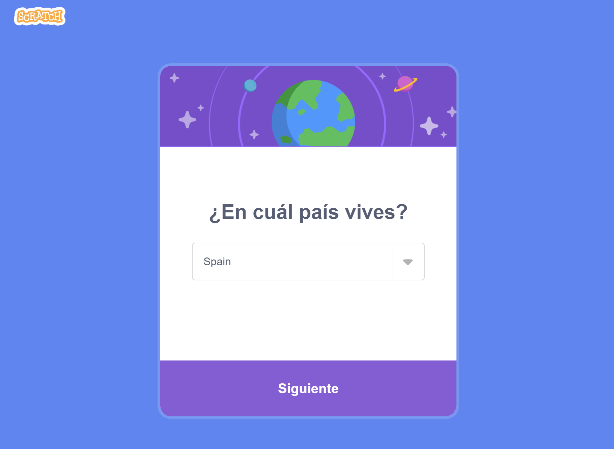
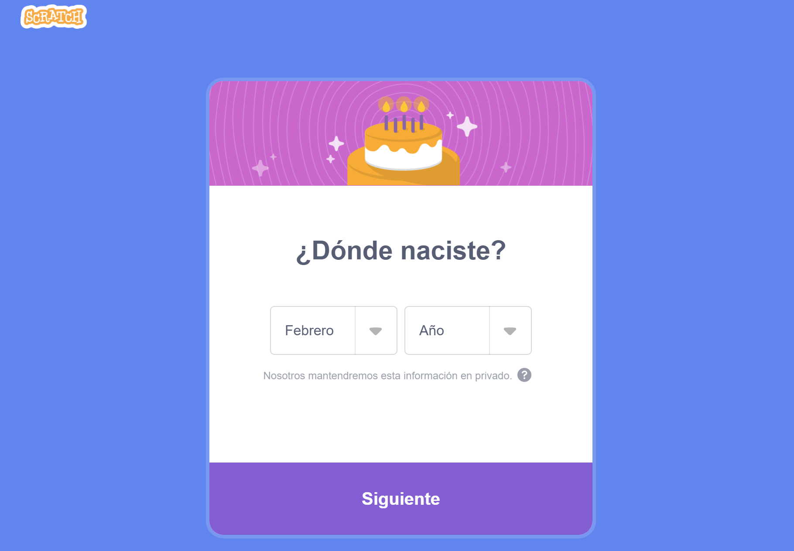
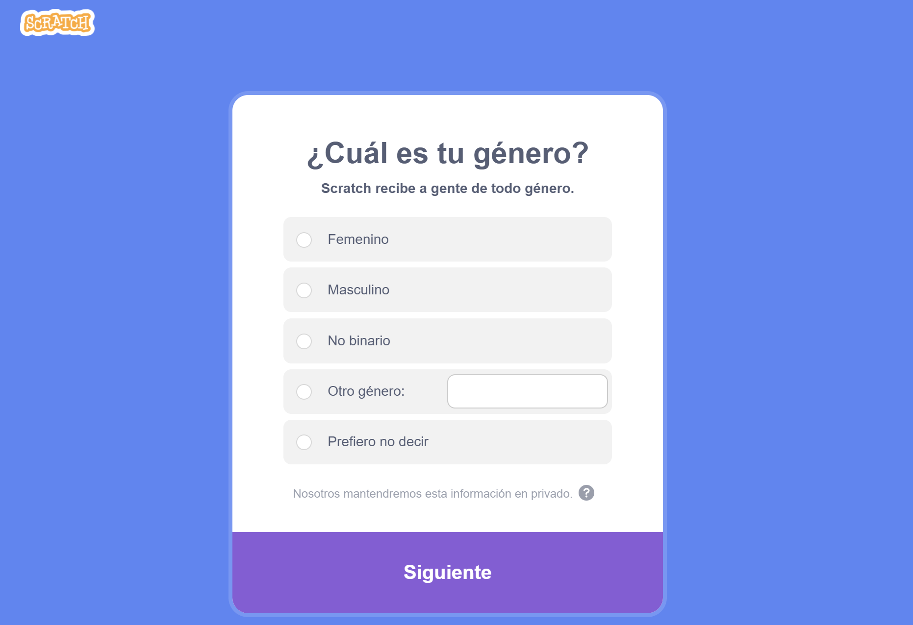
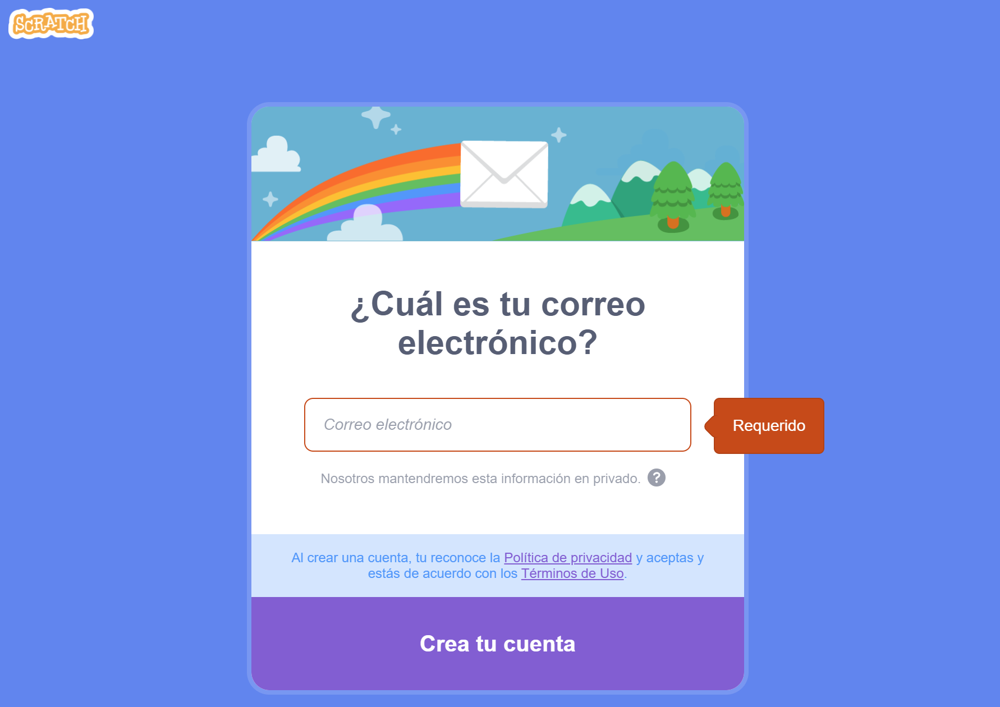
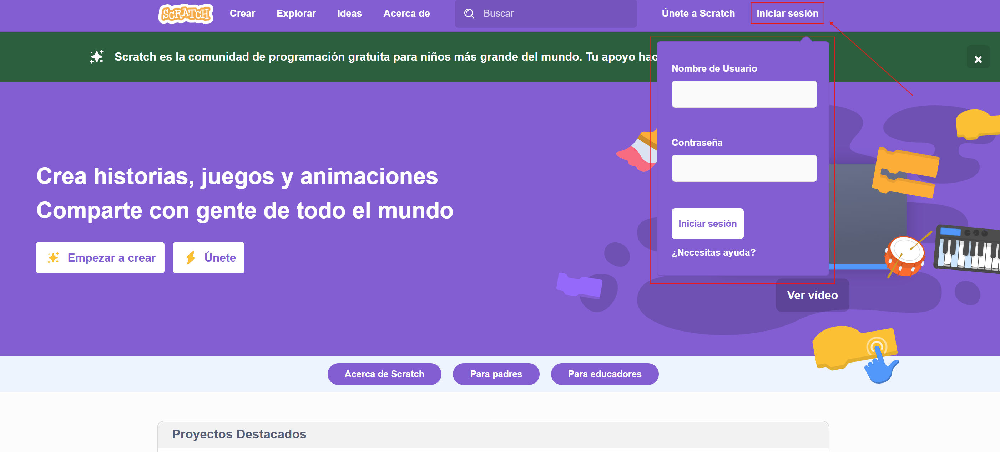

¿Cómo acceder a Scratch?
Puedes acceder a la página de Scratch a través del siguiente enlace: https://scratch.mit.edu/
Puedes acceder a la página de Scratch a través del siguiente enlace: https://scratch.mit.edu/
¡Vamos a crearnos una cuenta de usuario en Scratch!
PASO 1: Pulsa en Únete a Scratch para iniciar el registro de un nuevo usuario.

PASO 2: Elige un nombre de usuario (que no exista ya registrado) y una contraseña segura.

PASO 3: Selecciona tu país. Ten en cuenta que todos los nombres aparecen en inglés.

PASO 4: Selecciona tu mes y año de nacimiento.

PASO 5: Especifica tu género (si lo deseas).

PASO 6: Finalmente introduce tu dirección de correo electrónico. Al finalizar este paso se recomienda comprobar la bandeja de entrada de nuestro correo y confirmar la cuenta de Scratch (será necesario para poder compartir nuestros proyectos Scratch y hacerlos públicos).

¡Pues ya estaríamos registrados!
Para iniciar sesión simplemente utiliza tu nuevo nombre de usuario y contraseña:

Obra publicada con Licencia Creative Commons Reconocimiento Compartir igual 4.0